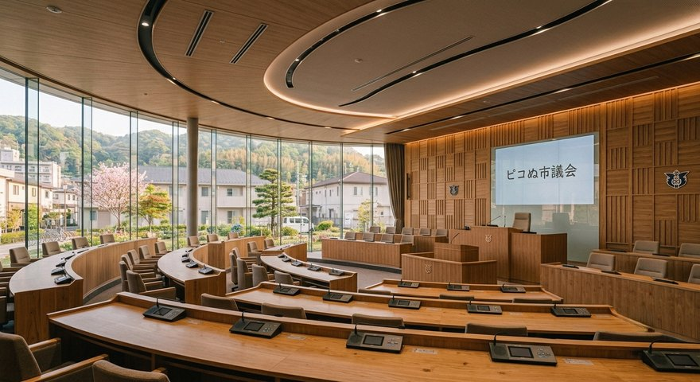
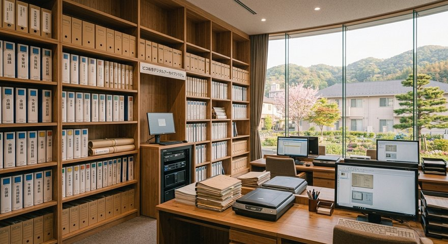

議場について
議場は、ピコぬ市議会の本会議が開催される場所です。ここでは、市の方針や暮らしに 関わることについて議論が行われています。ピコぬ市では、決まった結果だけではなく、 そこに至るまでの話し合いや検討の過程も大切な記録だと考えています。
議会事務局の業務

議会事務局では、市議会が円滑に運営されるよう、会議の準備、資料作成、記録管理 などを担当しています。
- 本会議や委員会の運営補助
- 議会資料の作成と管理
- 会議録の作成と保存
- 議会に関する情報公開
議会と記録
議論の中には、すぐに答えが出ないものや、さまざまな意見を重ねながら考えていくものがあります。ピコぬ市では、その過程も市の大切な記録として残しています。
傍聴について
本会議は原則として公開されています。市政について話し合われる場を、直接ご覧いただけます。傍聴を希望される方は、開催日程をご確認ください。
窓口案内
| 場所 | ピコぬ市役所 本庁舎5階 議会事務局 |
|---|---|
| 受付時間 | 平日8:30〜17:15 |
| お問い合わせ | ぬぬ-ぬかピコ-1005(議会事務局直通) |
議会に関する資料や会議録については、市政情報ページをご確認ください。